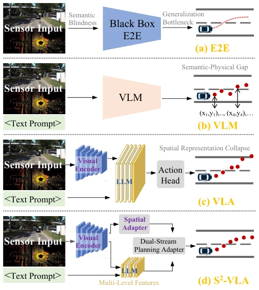
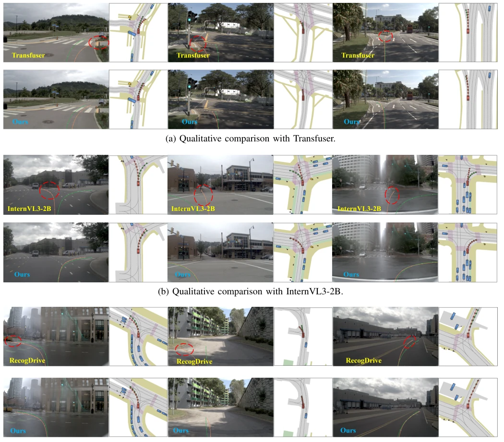

This paper attempts to address the persistent issue of VLA models in autonomous driving that "understand the principles but have shaky hands." The authors keenly point out that traditional VLA mixes semantics and space, leading to the loss of spatial details after deep feature compression, known as "spatial representation collapse." S2-VLA employs a dual-stream architecture, one managing "what to think" (semantics) and the other "where" (space), finally fused together. This approach is quite clear, after all, asking a language model to directly guess continuous coordinates is indeed quite demanding for it. Experimentally, NAVSIM reached 87.1 points, which is indeed impressive, especially the no-collision rate of 98.4%. However, the conclusion honestly admits the high computational overhead, and inference speed is not mentioned, estimating that a graphics card might be needed for deployment. Overall, it is a pragmatic "divide and conquer" solution, but do not expect it to save compute like DiffusionDrive, as multi-stream parallelism is inevitably resource-intensive, suitable for scenarios requiring high precision rather than extreme real-time performance.
Although autonomous driving end-to-end models are popular, pure VLMs output discrete tokens and cannot directly generate continuous control signals, there exists a "semantic-physical gap" [11]. Existing VLA models attempt to unify perception and control, but single-stream architectures lead to the loss of fine-grained spatial information during deep semantic feature compression, triggering "spatial representation collapse" [13]. This results in the model lacking geometric priors, making it difficult to handle boundary perception and long-tail scenarios. For example, although ReCogDrive [15] enhances cognition, deep feature compression still destroys spatial details. Additionally, traditional E2E models suffer from semantic blind spots and lack high-level cognitive reasoning capabilities. Therefore, an architecture capable of preserving geometric precision is needed to avoid interference from language abstraction on physical execution, ensuring the physical feasibility of trajectory generation.

Fig. 1. Overview of S2-VLA compared with existing paradigms. (a) Tradi- tional E2E models suffer from semantic blindness, lacking the interpretability and high-level cognitive reasoning required for complex traffic scenarios. (b) VLMs produce discrete outputs unsuitable for continuous control. (c) Conventional VLAs suffer from spatial representation collapse, leading to loss of fine-grained spatial and geometric details. (d) Our proposed S2-VLA enables safe, boundary-aware, and physically compliant trajectory generation.
方法Method
S2-VLA 整体架构包含语义流、空间流和规划适配器。语义流基于 InternVL3-2B 骨干，通过稀疏采样策略从特定层提取多尺度特征，并注入 64 个可学习动作查询，旨在聚合执行相关特征以形成高层意图表示。空间流则完全绕过自回归语言瓶颈，直接从 ViT 提取未压缩视觉特征，利用动态分辨率策略处理高分辨率图像。该流通过 Map Head 重建局部 BEV 语义地图，并通过 Agent Head 预测动态智能体状态，以此显式注入几何先验。最后，Dual-Stream Planning Adapter 采用级联注意力机制融合两者：第一阶段对齐语义意图与状态记忆，第二阶段利用空间特征修正规划令牌，强制轨迹遵守物理边界。训练采用三阶段 SFT 流程，先微调 VLM，再训练感知模块，最后优化空间细化模块，确保端到端轨迹规划的有效性。
The overall S2-VLA architecture includes a semantic stream, a spatial stream, and a planning adapter. The semantic stream is based on the InternVL3-2B backbone, extracting multi-scale features from specific layers via a sparse sampling strategy, and injecting 64 learnable action queries, aiming to aggregate execution-related features to form high-level intent representations. The spatial stream completely bypasses the autoregressive language bottleneck, extracting uncompressed visual features directly from ViT, utilizing a dynamic resolution strategy to handle high-resolution images. This stream reconstructs local BEV semantic maps through the Map Head and predicts dynamic agent states through the Agent Head, thereby explicitly injecting geometric priors. Finally, the Dual-Stream Planning Adapter adopts a cascaded attention mechanism to fuse both: the first stage aligns semantic intent with state memory, and the second stage utilizes spatial features to correct planning tokens, forcing trajectories to comply with physical boundaries. Training adopts a three-stage SFT process, first fine-tuning the VLM, then training the perception module, and finally optimizing the spatial refinement module, ensuring the effectiveness of end-to-end trajectory planning.
Tested on the NAVSIM closed-loop benchmark, comparing E2E (e.g., UniAD [2]), VLM/VLA (e.g., ReCogDrive [15]), etc. Metrics include PDMS, NC, DAC, etc. S2-VLA achieved PDMS 87.1, NC rate 98.4%, outperforming most baselines. Ablation studies show that adding the spatial stream significantly improves DAC, and auxiliary tasks improve NC. Qualitative analysis indicates that compared to the geometric bias of InternVL3-2B and boundary violations of Transfuser, S2-VLA trajectories align more closely with expert demonstrations. However, DiffusionDrive [4] remains slightly higher, as it utilizes LiDAR and diffusion decoding. Additionally, the model performs robustly in long-distance prediction and complex intersections, proving the effectiveness of dual-stream fusion.

Fig. 4. Qualitative analysis. The green curves represent ground-truth expert trajectories, and the orange curves represent the model’s predicted future trajectories.